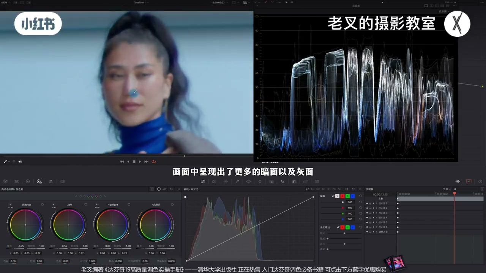
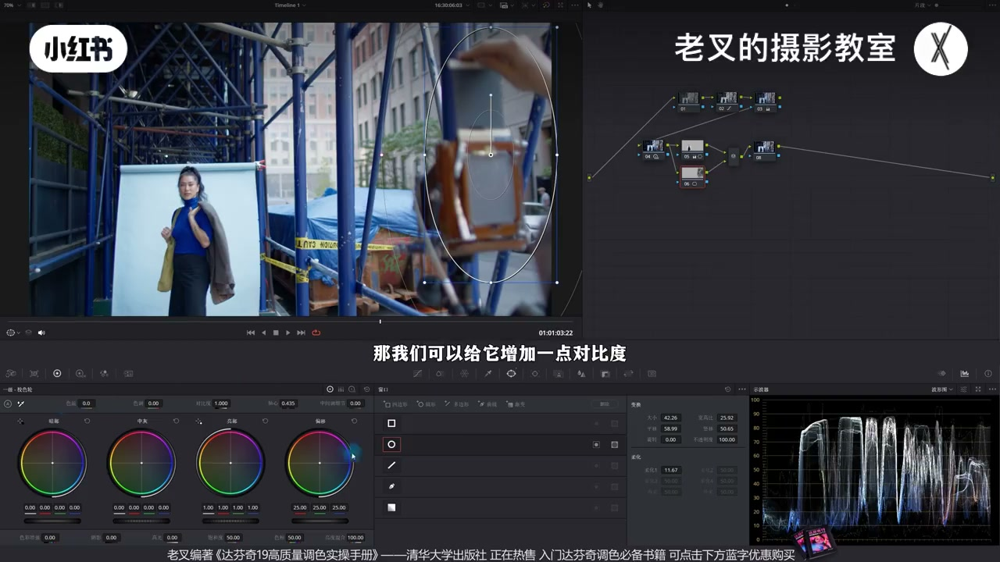
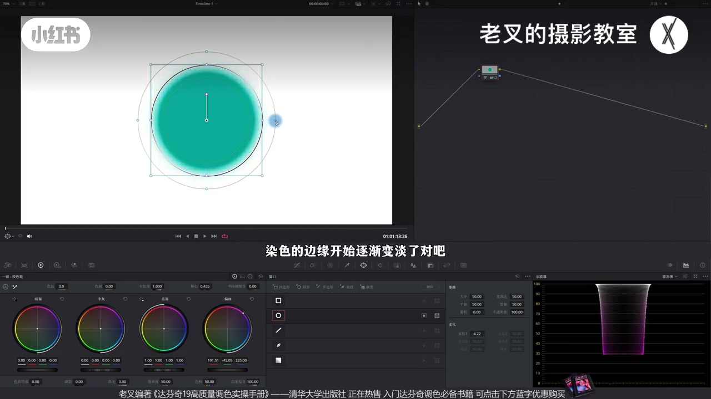
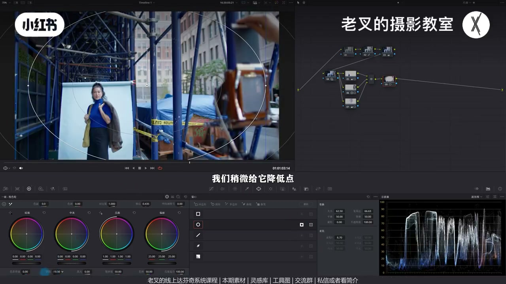
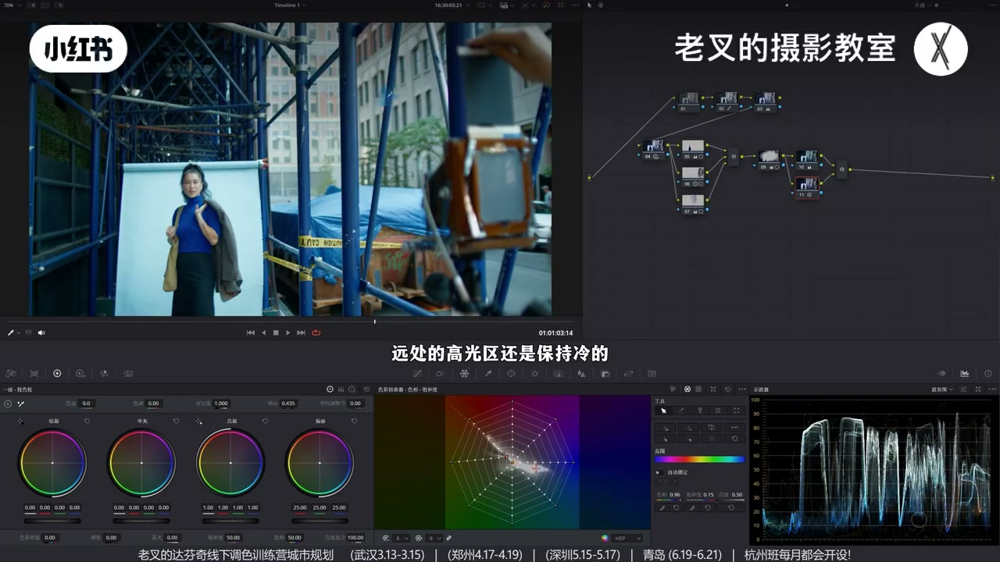

内容要点
遮罩反映你对还原结果的不满与优化。先 HDR 展脸部灰面立体（全局会改环境）；再局部：提人物、对比强化相机、压中间过亮区——柔化尽量大。穿插讲清圆形遮罩三/四圈与渐变箭头含义。暗角巩固视线。风格化先盘点画面已有色，从夹角找（如加绿），并行纠肤；高光区该暖却仍冷时再用遮罩局部加温。最后可用偏移式软对比浓郁化。
知识结构
降 Light/Shadow、抬 Highlight 展脸 40–75 区间。
提人、强化相机、压中间亮区；柔化开大。
圆遮罩起止与柔化圈；渐变箭头方向与衰减。
暗角；加绿纠肤；高光遮罩加暖；软对比收束。
遮罩=局部纠正全局副作用与主次。先全局出体积，再遮罩抢回视线。风格从已有色夹角长出来，并让亮暖暗冷物理自洽。
00:00-02:08何时用遮罩：先对不满做全局 HDR
遮罩反映你对画面不满的优化。还原后仍平：女主体、右侧相机重要，但脸明暗不够。波形交叉点显示脸约 40–75。
第二排 HDR：降 Light/Shadow 让更多亮面变灰面立体，再抬 Highlight 护最亮——脸立体甚至显小。但全局会改环境：角架更深、远处更亮抢走视线——于是需要局部遮罩。

02:08-03:25人物 / 相机 / 中间亮区三刀
人物遮罩柔化开大，略提曝光——提太多边缘又明显。Option+P 并行：相机遮罩加对比+轴心左移略亮，避免灰融背景。
再并行压中间过亮：降中灰与亮部曝光。三节点后视觉中心回到人物。

03:25-05:40圆形与渐变遮罩范围怎么读
圆遮罩柔化开大出现多圈：描边控制点线是起始全效范围；外圈拉大柔化过渡；中间还有柔化起点圈——之内满效，之外渐减到外圈与默认圈中点为 0。Shift+H 突出显示可验证。
渐变：箭头+垂线；反方向线后满效，沿箭头衰减至中点约 0，箭头长度改过渡。理解后回原片加暗角：超大柔化圆反转，降曝光且略抬高光。

05:40-08:27风格化：从已有色夹角找；亮暖要遮罩补
盘点蓝、肤橙黄等，风格可从夹角加绿；并行蜘蛛网纠肤提饱和、黄略转橙。仍怪：暖应在高光，远处高光却冷——再遮罩局部加色温。可后插全局略暖，不必回改。
想更浓：降偏移/加亮部、降中灰、抬暗部做软对比。力度自控；不熟遮罩更要练区域性调整。


完整转录（303段）
以下文本由 Whisper medium 模型自动转录，可能存在少量识别误差，已尽可能修正。
经常会有朋友问我调色的时候到底什么时候该用遮罩
那遮罩的使用呢其实就是反映你对画面不满的优化结果的
比如说这个画面当我们已经做好了还原之后能够看到啊
整体的画面还是非常平的
主体呢是这位被拍摄的女生右侧的相机其实也是比较重要
可是目前我们放大看画面
人物的脸上原本其实有明暗关系
但是目前的结果是不够明确的
我们可以打开波星图
在波星图右上角三个点的设置中勾选显示线的急交点缓和线
那此时呢我们把鼠标移动到画面中
波星图上就会呈现出对应的曝光情况啊
我们看到人物的脸
它目前的范围是这个范围
最暗的呢差不多在40
最亮的在75左右
我们想要让人物脸上的反差更明显的
这个时候呢就需要人物脸上的明暗关系更强
所以我们可以建立几个节点拉到第二排
这时候我们就要先利用HDR色轮
来给画面全局做一下曝光优化
明暗关系强
那自然就是让亮的更亮暗的更暗对吧
但人物的脸上不是只有亮面和暗面的
必须得有足够的灰面才能显得立体
所以我们目前需要让更多的亮面内容往暗面去走
也就是稍微降低点Light色轮的曝光
也可以降低点Shadow色轮的曝光
那此时画面中呈现出了更多的暗面以及灰面对吧
但是它的亮面也受到了牺牲
所以我们再稍微提高一点更亮的Highlight色轮的曝光
好大概到这个程度
我们先不看画面
我们看波星图
是不是在刚刚我们75-40之间的内容被展开了对吧
展开了就代表着它的明暗反差变得更强了
那我们再看到人物的脸上的变化
这是调整前非常平
而且特别亮不好看
做完之后人物脸上的皮肤就变得更加立体了对吧
还能显脸小
但是这样做会出现一个意外的问题
HDR色轮使用毕竟是全局影响
这必然会改变环境的曝光
我们虽然让其余部分
不特别是这边重复的角属架移
让它变得更加的深邃以外
还让远处这一个区域让它变得更亮了
那更亮人物又不够亮
就会导致主体不够突出
视线很容易被亮的地方带走了对吧
这时候我们就需要局部进行优化
所以呢我们就需要用到遮罩
我们先来一个节点给人物体量
人物体量是必须的
因为它是主体嘛
我们给它画一个遮罩
把柔化开的稍微大一点
大家在用遮罩的时候
柔化尽可能的大一点
这样可以减少遮罩边缘
过于明显的风险
画好了遮罩之后呢
给它稍微提高一点点曝光
不用提太多
你也不能提太多
你提这么亮的话
这个遮罩边缘不就又变得过于明显了吗
对吧
稍微提高一点
大概这个程度
然后我们在Android Out加P
或者是Option加P
建立一个并行节点
在下面这个节点中
给右边这里的相机
也可以给它画一个遮罩
让它稍微立体一点
目前这个相机还是有点灰的
这灰的就导致它跟背景融为一体了
也是不够突出
对吧
那我们可以给它增加一点对比度
然后配合轴心
让它稍微亮一点点回来
也就是轴心向左移动一点
好 大概到这个程度
最后呢就是中间区
同样建立一个并行节点
要解决中间区这么亮
那自然就是让它压暗一点呗
我们再给它画一个遮罩
柔化开大
然后呢降低一点中灰色轮的曝光
也可以降低一点亮补色轮的曝光
好 大概是这个程度
我们来看一下这三个节点的调整
前后变化
是不是画面的视觉中心发生了改变
也就是它的曝光比重发生了改变
让我们的视线中心
能够更聚焦于人物
对吧
这时候呢我们就要插进去一块内容
曾经有不少朋友问过我
遮罩的范围到底是什么意思
怎么去判断
比如说圆形遮罩
我们给画面做一个圆形遮罩了之后
你会发现它有三个圈
那这三个圈它分别代表着什么范围呢
我们可以先把内外两个较细的圈缩小
也就是减少它们的柔化
在窗口面板中呈现的是这个柔化的数值
当我们柔化数值开大
两侧范围就会更大
如果把柔化开小或者是零的话
那画面中只有一根线
也就是只有一个范围
然后对于这个遮罩范围进行染色
我们假设给它染成这个颜色
此时我们看到
这个圈内都被染上了颜色
对吧
并且它的遮罩边缘是清晰锐利的
而这个边缘就是以蓝色描边
白色填充的圆点围成的线
那这一圈就是遮罩的起始范围
随着我们拉的外围粉色描边
这个圆时你会发现
染色的边缘开始逐渐变淡了
对吧
拉得越开变淡的范围也就越大
柔化的范围也就越大
此时画面中出现了三个圈
我把这个遮罩开大一点
此时画面中出现了三个圈
对吧
里面一个圈
中间一个圈
外围还有一个圈
但是我们仔细观察
它其实是有四个圈的
在这个位置
还有一个边缘没那么清晰的一个圈
而这个圈就是柔化的起点
这个圈之内的内容
保持了染色的行为
而从这个圈之外
染色的行为开始逐渐减少
一直到外围这个圈
和默认这个圈的中间位置
染色行为就变成0了
那此时其实我们也可以
按住Shift加H打开突出显示
看到我们的制造范围
染色的柔化行为
是从中间这个圈
和默认圈中间这个范围开始
一直到默认这个圈
和外围这个圈的中间位置
很好理解对吧
还有不少朋友对渐变制造
也有理解上的难点
我们可以看一下
渐变制造它其实是由一个
箭头加上一条垂直于箭头的线组成的
当我们给这个渐变制造染色了之后
能够看到和箭头反方向
并且是在这根线后面的区域
是完整呈现调整的内容的
而调整的行为
会随着箭头方向逐渐简单
直到近似于中间位置
染色的行为变成0
并且这个行为
会随着我们箭头长度的改变
而发生改变
也是很好理解的对吧
那简单理解了之后
我们就回到刚刚那个画面
我们已经通过这三个制造的区性调整
让画面的视觉中心
成功的转移到人物身上
但还没完
我们也可以给画面再来一个暗角
也就是建一个超大柔化的圆形制造
把柔化记得开大
然后把它反转范围
对于外围区域
我们稍微给它降低点曝光
还是那句话
要压不能只压
你还得提亮对吧
我们要把高光划快
也稍微提高一点点
让四周呈现出一个
比较淡的一个暗角效果
暗角也可以再次巩固一下
我们想让画面视觉中心
更聚焦于前景的一个效果
接下来我们就可以开始动颜色了
素材我已经传到了
线上分享平台
大家可以领取过去之后
练练手
还要打分起线上系统
各种各样的线下调色训练营
那颜色怎么调整呢
我们之前说过
如果说你不知道风格化的思路是
其实可以分析画面中
存在哪些颜色
有蓝色 对吧
还有皮肤的橙黄色以及黄色
明确了这些颜色之后
那么我们就可以对画面
全局的风格化颜色
从这些颜色的夹角去找
我们可以再来一个节点
让整体稍微加点绿
其实不错
差不多是这个效果
挺好的 对吧
但是做完了之后
皮肤会受到影响
那么我们就可以再建一个
并行节点
在下面这个节点中
用蜘蛛网来把肤色
给它纠正回来
我们可以吸取下肤色
让它的薄度稍微上来一点
然后下面这个黄色
也可以让它稍微
往橙色方向走一点
大概是这个行为
我们把肤色给它纠回来了
但是我们仔细看画面
还是感觉怪怪的
为什么会怪呢
我们都知道
如果要去区分画面中
冷与暖的区域
最常见的就是明暗关系
一个场景中暖的区域
一般会发生在高光区域
而冷的则是暗不去
但是画面中人物虽然暖了
远处的高光区域
还是保持冷的 对吧
这就是让你画面显得怪的原因
所以这个时候
我们可以再来一个节点
又要用到遮罩
我们画好了这个制造之后
然后可以改变色温
让它稍微暖一点点回来
大概是这个效果
此时你看画面
就会变得稍微舒服了一点
对吧
在目前的基础上
如果你觉得
还想要再暖一点的话
其实再来个节点
给画面整体再加点色温也行
你不用回去做
回去做太麻烦了
对吧
大概这个意思
当然你可要可不要
这个问题不大
最后如果你想让画面再浓郁一点
可以来一个左右左右对比度
也就是降低偏移色能的曝光
多加一点
问题不大
我们大胆的降
然后再提高亮部色轮的曝光
再降低中灰色轮的曝光
最后提高暗部色轮的曝光
把它的暗部给它找回来
大概是这个意思
这样的调整
我们就让画面从这样变成了这样
效果还挺好的
对吧
当然你其中这些节点的力度
你可以自己去把控
色彩领取过去之后
自己练一练
特别是对于有些朋友
他对遮罩不太能理解的话
你更要去感受一下
每一次操作的
区域性调整的问题
讲到这里
如果绝对你有帮助的话
还希望多多三连
好了
这期就到这里
886